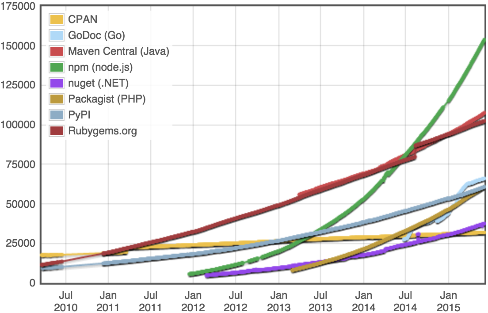

培養全端能力與跨領域學習
Duncan Hsieh
press
@ 台灣互動設計協會
我第一份工作是網站工程師
2004 年
誤打誤撞，一個工程師自幹一個電商網站。
從沒想過自己寫的程式可以運作 11 年以上!
Full-stack Web Developer @ 2004
HTMLCSSJS / FLASHPHPMySQLApache + Linux
什麼是全端工程師?
Photo by hedvigs CC-BY
前端 + 後端 = 全端工程師?
Source Patryck Gratão
Full-stack Web Developer @ 2015
HTML & HTTP
http://
傳輸協定
HTML < / >
用來結構化資訊
Full-stack Web Developer @ 2015
HTML & HTTPCSS
CSS
幫 HTML 化妝
Full-stack Web Developer @ 2015
HTML & HTTPCSSClient-side scripting
JavaScript
讓網頁可以互動
前端三要素

前端工程師
入門容易出師難
全端工程師著重在 framework 的應用
不必出師，只要跟著 best practice 動手做
CSS extension language
模組化的 CSS 開發方式

工具自動化
省去操作工具的時間

Web App generator
甚至用工具自動產生整個專案的樣板

省下來的時間就可以
向 Backend Developer 邁進
Full-stack Web Developer @ 2015
HTML & HTTPCSSClient-side scriptingServer-side scripting
Server-side scripting

全端只要靠 JavaScript

Web Frameworks
開發自己的 API / Real-time App
npm
成長最快的套件管理系統
framework + npm + tools
前端後端一條龍，串起開發需要的每個模組

Full-stack Web Developer
HTML & HTTPCSSClient-side scriptingServer-side scriptingDatabase
Database
資料儲存變得更簡單


LoopBack
讓資料庫變成 API

Full-stack Web Developer
HTML & HTTPCSSClient-side scriptingServer-side scriptingDatabaseOperactions
Operactions
利用 dockerhub 建立適當的運作環境

Operactions
佈署在雲端服務之中
不只如此
Full-stack Web App Developer
可以不輕易的跨足 App 開發
把 Web 包裝成 Hybrid App

用 ionic framework 開發 Hybrid App

React native 開發 Native App

目前只支援 iOS ，預計今年 9 月推出 Android
技術的部分講到這邊到此為止
什麼是全端工程師?
全端是一種思維
對學習有愛！「Stay Hungry , Stay Foolish」!
對產品開發有愛！遇到問題是用學習去解決的！
保持 Hacker 的精神！做出來才是真的！
所以他不是一個職稱
在開發產品的任何成員中，
任何人都可以成為全端工程師。
他適合存活在
敏捷開發團隊 or 新創團隊
在高度專業分工的公司裡的小部門時，心容易委屈
Developer
Full-stack Developer
HTML & HTTPCSSClient-side scriptingServer-side scriptingDatabaseOperactions
Developer
Marketer
Full-stack Marketer
CopywritingNetwork MarketingAdvertisingA/B TestCustomer ServiceGrowth Hacking
2005 ~ 2011 年
誤打誤撞，在幾間公司擔任全端行銷。
從沒想過可以用 SEO 讓垂死的公司轉虧為盈。
Developer
Marketer
Designer
Full-stack
UX Designer
ResearchService DesignInteraction DesignWireframingPrototypingAnalytics
2011 年至今
不小心認識了 Richard 開始參加 HPX 。
不小心認識了 Kyle 加入了 IxDA Taiwan 。
我正在 Full-stack Designer 的旅途中！
有這麼多技術和資源可以使用
「當你真心渴望解決某個問題時，
整個宇宙都會聯合起來幫助你完成。」
-- 全端少年奇幻之旅
Developer
Marketer
Designer
Unicorn